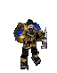

Mason Thompson · Product & AI Systems

Ready to work
I'm a technical guy who likes integrations, forms, and spreadsheets.
Projects below span local large language models, synthetic speech, ASR pipelines,
job-board APIs, adversarial prompt engineering, and deliberately strange applications
that perform real work.
ALL-LLLM POD
Conversational cross-platform AI. Satire.
Talk and text with persona agents grounded in transcripts from the All-In Podcast.
LocalSlop.studio
Automating high-intent job applications
An all-in-one job-search and application system with job-board aggregation, data prefill, local-LLM tailoring, PDF export, and application tracking.
DLSS v1.1
Desktop Loader Super Slop
A lightweight desktop app for managing resident LLMs, Python environments, remote services, and ad hoc media downloads.
MicroSlop CoPilot
General-purpose local inference
A Windows 3.1-themed chatbot UX with iOS and macOS clients.